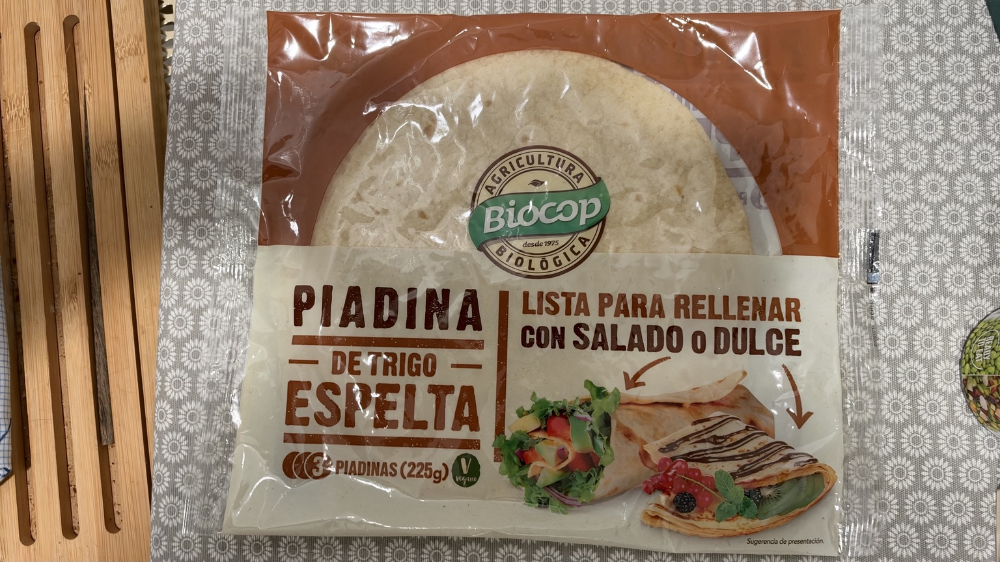
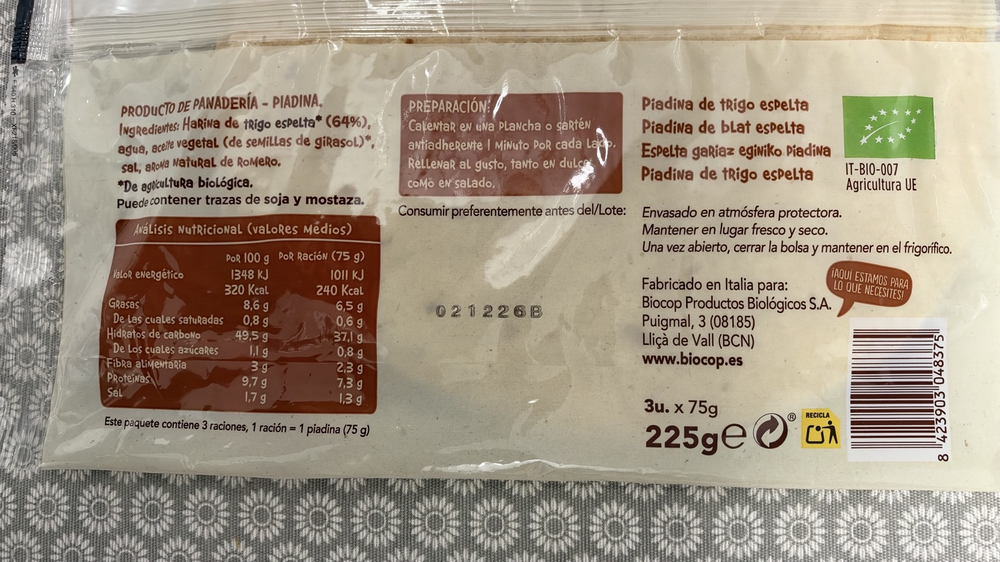

Piadina de trigo espelta
Piadinas de trigo espelta de agricultura biológica, en paquete de tres unidades de 75 g.
3 × 75 g. Lista para rellenar con salado o dulce. El envase no la identifica como integral.
Precio de referencia
3,49 € · 15,51 €/kg
Dónde lo compro
Carrefour Los Rosales
30/09/2026
Lo uso en
Por qué lo uso
Lo uso para preparar burritos.
En mi cocina
La uso como envoltura de los burritos. Según el envase, se calienta en plancha o sartén antiadherente 1 minuto por cada lado antes de rellenarla.
Composición
harina de trigo espelta de agricultura biológica (64 %), agua, aceite vegetal de semillas de girasol de agricultura biológica, sal, aroma natural de romero.
Alérgenos: trigo (espelta), gluten.
Envasado en atmósfera protectora. Mantener en lugar fresco y seco. Una vez abierto, cerrar la bolsa y mantener en el frigorífico.
Fabricado en Italia para Biocop Productos Biológicos, S. A., Puigmal 3, 08185 Lliçà de Vall (Barcelona).
Puede contener trazas de soja, mostaza.
Valores por 100 g
| Energía | 1348 kJ / 320 kcal |
|---|---|
| Grasas | 8,6 g |
| De las cuales saturadas | 0,8 g |
| Hidratos de carbono | 49,5 g |
| De los cuales azúcares | 1,1 g |
| Fibra | 3 g |
| Proteínas | 9,7 g |
| Sal | 1,7 g |

Valoración de Yuka
61 / 100 · Bueno
Yuka señala la sal como aspecto negativo. Algunos datos de su captura difieren del envase: proteínas 7,8 frente a 9,7 g; fibra 2 frente a 3 g; azúcares 1,2 frente a 1,1 g; energía 329 frente a 320 kcal por 100 g. La ficha mantiene los datos de la etiqueta, sin presuponer el motivo de las diferencias.
Aspectos positivos según Yuka
- Aditivos · Sin aditivos: Sin sustancia peligrosa
- Ecológico · Ecológico: Sin pesticida de síntesis
- Proteínas · 7,8 g por 100 g: Algunas proteínas
- Fibras · 2 g por 100 g: Algunas fibras
- Grasas saturadas · 0,8 g por 100 g: Bajo en grasas saturadas
- Azúcar · 1,2 g por 100 g: Bajo en azúcar
- Valor energético · 329 kcal por 100 g: Impacto bajo
Aspectos negativos según Yuka
- Sal · 1,7 g por 100 g: Demasiado salado
Fuente: captura de Yuka aportada el 16/10/2026.

Ingredientes y tabla nutricional del envase
